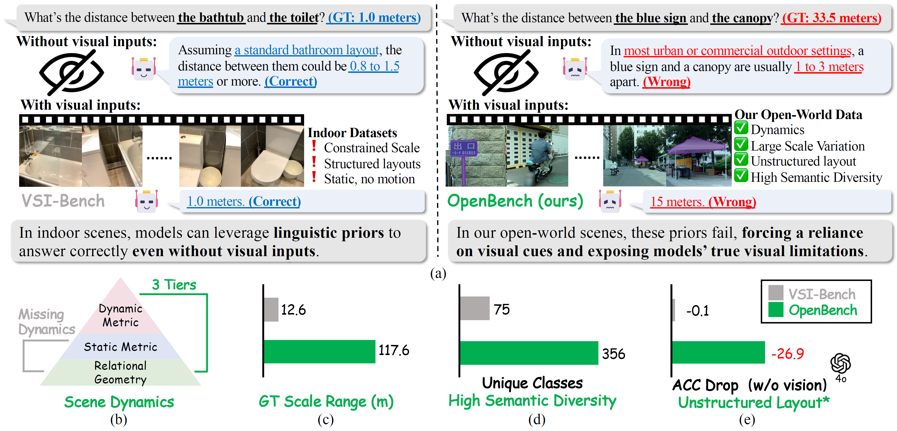

Mingrui WuM.S. studentRoom 320, Academy 2 Building
|

|
Biography
I am an M.S. student of LAMP (Learning And Machine Perception) in the School of Electronic, Electrical and Communication Engineering, University of Chinese Academy of Sciences , advised by Prof. Qixiang Ye and Prof. Tong Zhang . I got a B.E. degree in University of Chinese Academy of Sciences, Beijing in June 2024.
My research interests include computer vision and deep learning, specifically for vision-language models and spatial intelligence.
Publications & Preprints
 |
Mingrui Wu, Zhaozhi Wang, Fangjinhua Wang, Jiaolong Yang, Marc Pollefeys, Tong Zhang
From Indoor to Open World: Revealing the Spatial Reasoning Gap in MLLMs CVPR 2026 [Project Page] [Paper] [Code] |